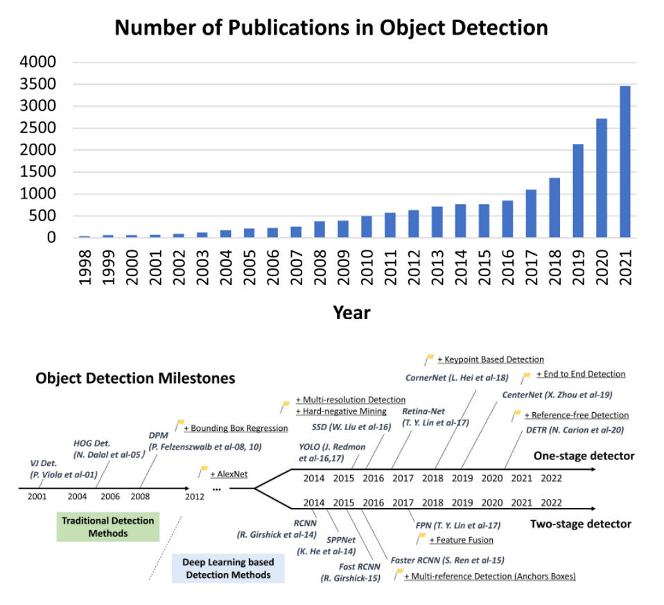

Object Detection in 20 Years: A Survey.
Proceedings of the IEEE, Volume 111, Issue 3, 2023. [PDF]
Extensively reviews the fast-moving research field of object detection in the light of technical evolution, spanning over a quarter-century's time (from the 1990s to 2022). A number of topics are covered in this paper, including milestone detectors, detection datasets, metrics, fundamental building blocks of detection systems, speed up techniques, and the recent state of the art detection methods.
Award: Winner of the 2026 Proceedings of the IEEE Best Paper Award. This annual award honors one exceptional survey, review, or tutorial paper published in the journal within the preceding three years. Selection recognizes work of broad significance with the potential for lasting impact, distinguishing this paper among recent contributions across the wide-ranging fields covered by Proceedings of the IEEE.